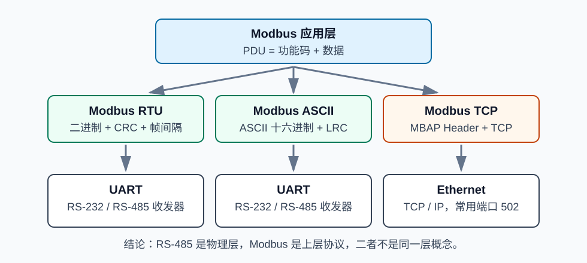
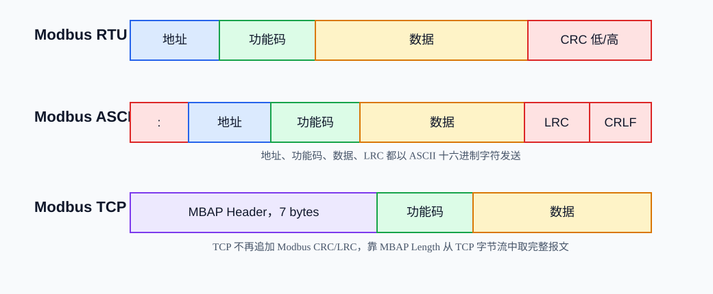
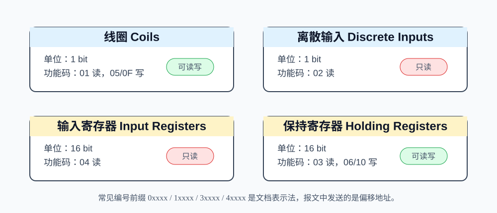
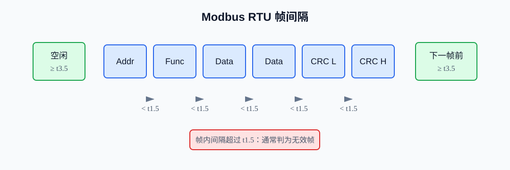
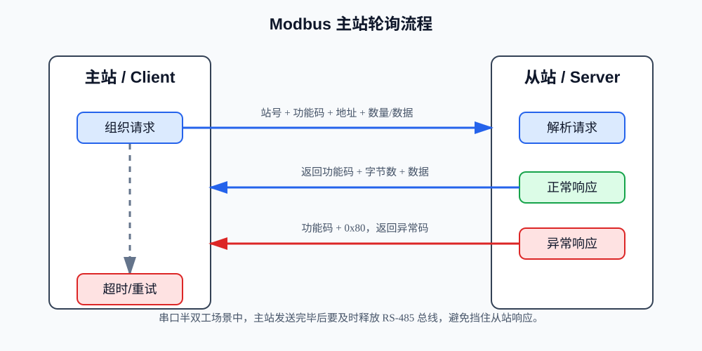

Modbus¶
Modbus 是工业控制和嵌入式设备里非常常见的一类通信协议。它看起来简单：主站发请求，从站回响应；读线圈、读寄存器、写寄存器。但真正做工程时，容易踩坑的地方很多：RTU 和 TCP 报文不一样，40001 和报文地址不一样，RS-485 不是 Modbus，本机寄存器字节序也不一定和对端一致。
这篇笔记按“先会读报文，再会设计寄存器表，最后会调试现场问题”的顺序整理。
1. Modbus 是什么¶
Modbus 最早由 Modicon 提出，后来成为工业现场广泛使用的开放协议。它的核心思想是：把一个设备内部的数据抽象成若干数据区，另一个设备通过功能码去读写这些数据。
在嵌入式项目中，Modbus 常见于：
- PLC 与传感器、仪表、变频器、伺服驱动器之间通信。
- 单片机设备通过 RS-485 接入上位机、HMI 或工控机。
- 网关把串口仪表数据转换成以太网 Modbus TCP。
- BMS、电表、水表、温控器、IO 模块等低速工业设备。
- 工厂改造项目中，新设备兼容旧 PLC 或旧组态软件。
Modbus 的优点是简单、资料多、调试工具多、跨厂家兼容性好。缺点也很明显：数据模型比较基础，没有统一规定 32 位数、浮点数、字符串的字节序；没有内建安全认证；轮询式通信在设备很多时效率会下降。
2. 从分层角度理解 Modbus¶
Modbus 不等于 RS-485，也不等于 UART。更准确地说，Modbus 是应用层协议，它需要运行在某种传输方式之上。

可以这样分层理解：
| 层次 | 常见内容 | 说明 |
|---|---|---|
| 应用层 | Modbus PDU、功能码、寄存器地址、数据 | 决定“读什么、写什么、怎么解释数据”。 |
| 传输/封装 | Modbus RTU、Modbus ASCII、Modbus TCP | 决定一帧报文如何开始、结束、校验和承载。 |
| 链路/物理 | UART、RS-232、RS-485、Ethernet | 决定电平、线缆、收发器、传输介质。 |
几个容易混淆的概念：
UART是 MCU 内部的串口外设，负责异步串行收发比特。RS-232是单端串口电气标准，点对点为主，距离较短。RS-485是差分总线电气标准，适合多节点、长距离、抗干扰现场。TCP/IP是网络协议栈，Modbus TCP 运行在 TCP 之上，默认端口通常是502。Modbus RTU/ASCII/TCP才是 Modbus 的不同通信形式。
所以，“我的设备支持 RS-485”只说明硬件接口支持差分总线，并不必然说明它会讲 Modbus；“我的设备支持 Modbus RTU”通常意味着它使用串口异步传输，并在上层使用 Modbus RTU 帧格式。
3. RTU、ASCII、TCP 的区别与联系¶
Modbus 的核心请求内容叫 PDU，PDU 主要由功能码和数据组成。不同通信形式会在 PDU 外面包不同的头尾，形成 ADU。

| 类型 | 常见介质 | 编码方式 | 帧边界 | 校验 | 典型场景 |
|---|---|---|---|---|---|
| Modbus RTU | UART + RS-485/RS-232 | 二进制 | 依靠静默时间分帧 | CRC-16 | 最常见的串口工业现场。 |
| Modbus ASCII | UART + RS-485/RS-232 | ASCII 十六进制字符 | : 开始，CRLF 结束 |
LRC | 便于人工观察，但效率低。 |
| Modbus TCP | Ethernet + TCP/IP | 二进制 | TCP 字节流 + MBAP 长度字段 | 依靠 TCP 校验，无 Modbus CRC/LRC | 工控机、PLC、网关、以太网 IO。 |
三者的联系：
- 功能码语义基本一致，例如
03都是读保持寄存器。 - 寄存器地址、数量、数据内容的含义基本一致。
- 上层业务可以统一理解为“client/master 发起请求，server/slave 响应”。
三者的差异：
- RTU/ASCII 有站号地址，TCP 有 MBAP Header 中的 Unit Identifier。
- RTU 使用 CRC，ASCII 使用 LRC，TCP 不再追加 CRC/LRC。
- RTU 靠帧间隔判断报文结束，TCP 靠 MBAP 的 Length 字段判断后续长度。
- ASCII 把每个字节拆成两个 ASCII 十六进制字符，带宽利用率低于 RTU。
4. 主站/从站与 Client/Server¶
传统串口 Modbus 常说：
- 主站，Master：主动发起请求的设备。
- 从站，Slave：等待请求并返回响应的设备。
Modbus TCP 更常说：
- Client：主动建立连接并发送请求的一方。
- Server：监听端口并响应请求的一方。
它们的对应关系通常是：
| 串口说法 | TCP 说法 | 行为 |
|---|---|---|
| 主站 Master | Client | 发起读写请求。 |
| 从站 Slave | Server | 保存数据表，按请求响应。 |
在实际项目里，一台设备也可以同时扮演多个角色。例如一个网关对上位机是 Modbus TCP Server，对下游仪表又是 Modbus RTU Master。
5. Modbus 数据模型¶
Modbus 把设备内部数据抽象成四类数据区。初学时最重要的是分清“位数据”和“16 位寄存器数据”。

| 数据区 | 英文 | 访问单位 | 读写属性 | 常见编号前缀 | 常用功能码 |
|---|---|---|---|---|---|
| 线圈 | Coils | 1 bit | 可读可写 | 0xxxx |
01, 05, 0F |
| 离散输入 | Discrete Inputs | 1 bit | 只读 | 1xxxx |
02 |
| 输入寄存器 | Input Registers | 16 bit | 只读 | 3xxxx |
04 |
| 保持寄存器 | Holding Registers | 16 bit | 可读可写 | 4xxxx |
03, 06, 10 |
5.1 线圈 Coils¶
线圈是 1 bit 的可读写开关量，适合表示输出状态、继电器状态、使能位、控制命令位等。
例如：
00001：继电器 1 输出。00002：电机启动命令。00010：报警复位命令。
5.2 离散输入 Discrete Inputs¶
离散输入也是 1 bit，但只读，适合表示外部输入状态。
例如：
- 急停按钮状态。
- 接近开关状态。
- 门磁输入状态。
- DI 模块采集到的开关量。
5.3 输入寄存器 Input Registers¶
输入寄存器是 16 bit 只读数据，适合表示设备采集值、测量值、状态值。
例如：
- ADC 采样值。
- 温度、电压、电流的原始值或缩放值。
- 只读版本号、故障码、运行状态。
5.4 保持寄存器 Holding Registers¶
保持寄存器是 16 bit 可读写数据，工程中最常用。
例如：
- 设定温度。
- 电机目标转速。
- PID 参数。
- 设备地址、波特率等配置项。
- 32 位整数、浮点数拆成的两个连续寄存器。
6. 寄存器编号与实际地址偏移¶
这是 Modbus 最常见的坑之一。
很多说明书写 40001、40002、30001，这是“人看的寄存器编号”。但实际报文里的寄存器地址字段通常是从 0 开始的偏移地址。
例如要读说明书里的 40001：
- 数据区：保持寄存器。
- 功能码：
03。 - 报文地址：
0x0000。
要读说明书里的 40010：
- 数据区：保持寄存器。
- 功能码：
03。 - 报文地址：
0x0009。
不要把 40001 直接写进报文地址。报文地址字段只有 16 位，真正发送的是偏移量，不包含 4 这个数据区前缀。
不同厂家文档可能使用不同写法：
| 文档写法 | 可能含义 | 报文地址通常是 |
|---|---|---|
40001 |
第 1 个保持寄存器 | 0x0000 |
40010 |
第 10 个保持寄存器 | 0x0009 |
Holding Register 0 |
第 1 个保持寄存器，零基地址 | 0x0000 |
Address 1 |
可能是一基地址，也可能是偏移 1 | 需要看厂家说明或抓包确认 |
工程上建议在寄存器表里同时写清楚“文档编号”和“报文偏移地址”。
7. 常见功能码¶
功能码表示这次请求要做什么。下面这些是嵌入式项目最常见的基础功能码。
| 功能码 | 名称 | 操作对象 | 方向 | 典型用途 |
|---|---|---|---|---|
01 |
Read Coils | 线圈 | 读 | 读取继电器输出、开关控制位。 |
02 |
Read Discrete Inputs | 离散输入 | 读 | 读取按钮、传感器开关量输入。 |
03 |
Read Holding Registers | 保持寄存器 | 读 | 读取配置、状态、测量值。 |
04 |
Read Input Registers | 输入寄存器 | 读 | 读取只读采样值、状态值。 |
05 |
Write Single Coil | 单个线圈 | 写 | 单独控制一个输出位。 |
06 |
Write Single Register | 单个保持寄存器 | 写 | 设置单个 16 位参数。 |
0F |
Write Multiple Coils | 多个线圈 | 写 | 批量写输出位。 |
10 |
Write Multiple Registers | 多个保持寄存器 | 写 | 写 32 位数、浮点数、批量配置。 |
常见数量限制需要注意：
01/02一次最多读 2000 个 bit。03/04一次最多读 125 个寄存器。0F一次最多写 1968 个线圈。10一次最多写 123 个寄存器。
这些限制来自 PDU 最大长度。即使协议允许这么多，现场通信也不一定适合一次读满。低波特率 RS-485 上，建议按业务分块读取，避免单帧过长导致超时和重传成本变高。
8. RTU 报文结构¶
Modbus RTU 是串口场景最常见的格式。它把每个字段以二进制字节发送。
典型 RTU ADU：
+--------------+---------------+----------------------+---------------+
| Slave Address | Function Code | Data | CRC Low, High |
+--------------+---------------+----------------------+---------------+
| 1 byte | 1 byte | 0..252 bytes | 2 bytes |
+--------------+---------------+----------------------+---------------+
字段说明：
- Slave Address：从站地址，常见范围
1..247；0通常用于广播写操作，广播没有正常响应。 - Function Code：功能码，例如
03读保持寄存器。 - Data：起始地址、数量、字节数、寄存器值等。
- CRC：CRC-16 校验，RTU 中低字节先发，高字节后发。
8.1 RTU 帧间隔¶
RTU 没有起始字符和结束字符，靠总线静默时间判断一帧的边界。

规则要点：
- 一帧开始前，至少保持
3.5个字符时间的空闲。 - 一帧内部，字符之间的间隔不应超过
1.5个字符时间。 - 若一帧内部静默超过
1.5个字符时间，接收方可以认为当前帧无效。 - 一帧结束后，至少等待
3.5个字符时间，才认为总线进入下一帧。 - 当波特率大于
19200 bit/s时，很多实现使用固定时间：t1.5 = 750 us，t3.5 = 1.750 ms。
字符时间与串口格式有关。常见 8N1 是 1 起始位、8 数据位、1 停止位，共 10 bit；8E1 是 11 bit。
例如 9600, 8N1：
1 字符时间 = 10 / 9600 s = 1.0417 ms
t3.5 = 3.5 * 1.0417 ms = 3.646 ms
在 MCU 从站里，常用做法是：
- 串口接收中断或 DMA 把字节放入缓冲区。
- 每收到一个字节就刷新一个定时器。
- 定时器超时达到
t3.5后，认为一帧接收完成。 - 校验 CRC、站号、功能码，再进入协议解析。
8.2 CRC-16¶
RTU 使用 CRC-16 校验，常见多项式按反射形式实现为 0xA001，初值通常为 0xFFFF。
计算范围：
- 从 Slave Address 开始。
- 包含 Function Code 和 Data。
- 不包含最后两个 CRC 字节本身。
发送顺序：
- CRC 低字节先发送。
- CRC 高字节后发送。
例如请求：
01 03 00 00 00 02 C4 0B
含义是：
01：从站地址 1。03：读保持寄存器。00 00：起始地址 0。00 02：读取 2 个寄存器。C4 0B：CRC，低字节C4，高字节0B。
9. ASCII 基本特点与 LRC¶
Modbus ASCII 也是串口协议，但它把每个字节编码成两个 ASCII 十六进制字符。
例如 RTU 中一个字节 0x3A，ASCII 模式会发送字符 '3' 和 'A'。
ASCII 帧格式：
: Address Function Data LRC CR LF
特点：
- 以冒号
:开始。 - 以回车换行
CR LF结束。 - 中间内容是 ASCII 十六进制字符。
- 使用 LRC 校验。
- 相比 RTU 更容易人工观察，但同样数据量下占用更多字符，效率较低。
- 对字符间隔更宽松，适合某些慢速或人工调试场景。
LRC 的基本思想是让参与校验的所有字节加上 LRC 后，低 8 位结果为 0。
常见计算步骤：
- 把 Address、Function、Data 的原始字节逐个相加。
- 只保留低 8 位。
- 取二进制补码，得到 LRC。
- 发送时把 LRC 也转换为两个 ASCII 十六进制字符。
ASCII 在现代嵌入式项目中不如 RTU 和 TCP 常见，但理解它有助于分清：RTU 与 ASCII 主要差异在串口帧编码、帧边界和校验方式，不是功能码语义不同。
10. TCP 报文结构与 MBAP Header¶
Modbus TCP 把 Modbus PDU 放到 TCP 连接里，不再使用 RTU 的站号和 CRC，而是在前面增加 MBAP Header。
典型 TCP ADU：
+--------------------+-------------------+
| MBAP Header | PDU |
+--------------------+-------------------+
| 7 bytes | Function + Data |
+--------------------+-------------------+
MBAP Header 结构：
| 字段 | 长度 | 说明 |
|---|---|---|
| Transaction Identifier | 2 bytes | 事务 ID，请求和响应保持一致，用于匹配请求。 |
| Protocol Identifier | 2 bytes | 协议 ID，Modbus 通常为 0x0000。 |
| Length | 2 bytes | 后续字节数，包含 Unit Identifier 和 PDU。 |
| Unit Identifier | 1 byte | 单元标识，常用于 TCP 到 RTU 网关后面的从站地址。 |
例如 Modbus TCP 请求：
00 01 00 00 00 06 01 03 00 00 00 02
拆开看：
| 字节 | 含义 |
|---|---|
00 01 |
Transaction Identifier = 1 |
00 00 |
Protocol Identifier = 0 |
00 06 |
Length = 6，后面还有 6 字节 |
01 |
Unit Identifier = 1 |
03 |
功能码，读保持寄存器 |
00 00 |
起始地址 0 |
00 02 |
数量 2 |
TCP 与 RTU 的重要差异：
- TCP 不依靠
3.5字符时间分帧。 - TCP 不带 Modbus CRC/LRC。
- TCP 可能发生粘包或拆包，不能假设一次
recv()就是一帧完整 Modbus 报文。 - 解析 TCP 时应根据 MBAP 的 Length 字段从字节流中取完整 ADU。
- Transaction Identifier 可以帮助客户端匹配并发请求，但很多简单设备只支持顺序请求。
11. 异常响应与异常码¶
当从站收到请求，但不能正常完成时，会返回异常响应。
异常响应格式的关键规则：
- 响应功能码 = 请求功能码 +
0x80。 - Data 中返回 1 个异常码。
例如主站发送 03 读保持寄存器，如果地址非法，从站可能返回：
01 83 02 C0 F1
含义：
01：从站地址。83：03 + 0x80，表示功能码03的异常响应。02：异常码，Illegal Data Address。C0 F1：CRC。
常见异常码：
| 异常码 | 名称 | 常见原因 |
|---|---|---|
01 |
Illegal Function | 设备不支持该功能码。 |
02 |
Illegal Data Address | 寄存器地址不存在，或起始地址加数量越界。 |
03 |
Illegal Data Value | 数量、写入值、字节数等不符合设备要求。 |
04 |
Server Device Failure | 设备执行请求时发生内部错误。 |
05 |
Acknowledge | 请求已收到，但需要较长时间处理。 |
06 |
Server Device Busy | 设备忙，稍后重试。 |
08 |
Memory Parity Error | 存储器奇偶校验错误。 |
0A |
Gateway Path Unavailable | 网关路径不可用。 |
0B |
Gateway Target Device Failed to Respond | 网关后的目标设备无响应。 |
调试时要区分“没有响应”和“异常响应”：
- 没有响应：可能是接线、站号、波特率、CRC、超时、总线冲突。
- 异常响应：说明链路基本通了，但请求内容不被设备接受。
12. 典型通信示例¶
12.1 RTU 读保持寄存器 03¶
需求：主站读取从站 1 的保持寄存器 40001 到 40002，共 2 个寄存器。
请求：
01 03 00 00 00 02 C4 0B
字段解释：
| 字段 | 值 | 说明 |
|---|---|---|
| Slave Address | 01 |
从站地址 1 |
| Function | 03 |
读保持寄存器 |
| Start Address | 00 00 |
报文偏移地址 0，对应常见编号 40001 |
| Quantity | 00 02 |
读取 2 个寄存器 |
| CRC | C4 0B |
CRC 低字节在前 |
假设响应：
01 03 04 00 64 00 C8 BA 7A
字段解释：
| 字段 | 值 | 说明 |
|---|---|---|
| Slave Address | 01 |
从站地址 1 |
| Function | 03 |
正常响应 |
| Byte Count | 04 |
后续数据 4 字节 |
| Register 1 | 00 64 |
十进制 100 |
| Register 2 | 00 C8 |
十进制 200 |
| CRC | BA 7A |
CRC |
12.2 RTU 写单个保持寄存器 06¶
需求：把从站 1 的保持寄存器偏移地址 0x0001 写成 0x000A。
请求：
01 06 00 01 00 0A 59 CD
正常响应通常原样回显请求中的地址和值：
01 06 00 01 00 0A 59 CD
这个回显不是“又写了一次”，而是确认从站已经接受该写操作。
12.3 RTU 写多个保持寄存器 10¶
需求：从站 1，从保持寄存器偏移地址 0x0000 开始写 2 个寄存器：0x1234、0x5678。
请求：
01 10 00 00 00 02 04 12 34 56 78 F8 10
拆解：
01：从站地址。10：写多个保持寄存器。00 00：起始地址。00 02：写 2 个寄存器。04：后续数据字节数。12 34 56 78：两个寄存器的值。F8 10：CRC。
正常响应：
01 10 00 00 00 02 41 C8
响应只返回起始地址和写入数量，不回显全部数据。
12.4 TCP 读保持寄存器¶
需求：通过 Modbus TCP 读取 Unit Identifier 1 的保持寄存器偏移地址 0，数量 2。
请求：
00 01 00 00 00 06 01 03 00 00 00 02
假设响应：
00 01 00 00 00 07 01 03 04 00 64 00 C8
注意：
- 响应的 Transaction Identifier 仍是
00 01。 - 响应 Length 为
00 07，表示后面Unit Identifier + PDU共 7 字节。 - TCP 报文没有 CRC。
13. 通信流程¶
Modbus 的典型流程是轮询式请求/响应。主站依次访问多个从站或多个寄存器区。

串口 RS-485 上尤其要注意半双工方向控制：
- 主站拉高 DE，切换为发送。
- 发送完整 RTU 请求。
- 等待最后一个字节真正移出移位寄存器。
- 关闭 DE，切换为接收。
- 等待从站响应。
- 超时则重试或记录故障。
如果 DE 关闭太早，会截断请求最后几个 bit；如果关闭太晚，可能挡住从站响应的开头。
14. 抓包、调试和排障思路¶
14.1 先确认物理层¶
串口 RTU/ASCII 常查：
- A/B 线是否接反。不同厂家对 A/B、D+/D- 标注并不完全一致。
- 是否有公共参考地。RS-485 是差分，但工程上仍常需要 GND 参考。
- 终端电阻是否只加在总线两端，常见为
120 ohm。 - 偏置电阻是否合理，空闲总线是否稳定。
- 线缆是否过长，分支是否过多，屏蔽层接法是否合适。
- 波特率、数据位、校验位、停止位是否完全一致。
- 半双工收发方向控制是否正确。
TCP 常查：
- IP、子网掩码、网关是否正确。
- 端口是否是
502或厂家自定义端口。 - 防火墙是否阻止连接。
- 同一设备是否限制 TCP 客户端数量。
- 网关是否正确转发 Unit Identifier。
14.2 再确认链路层和帧格式¶
RTU 常查：
- 站号是否正确。
- CRC 是否正确，低字节是否在前。
- 帧间隔是否满足
t3.5。 - 一帧内部是否因为中断延迟出现大间隔。
- 是否多个主站同时发包导致总线冲突。
ASCII 常查：
- 是否以
:开始、以CR LF结束。 - 十六进制字符大小写通常都可接受，但要保证字符合法。
- LRC 是否按原始字节计算，而不是按 ASCII 字符本身计算。
TCP 常查：
- MBAP Length 是否正确。
- 是否正确处理 TCP 粘包和拆包。
- Transaction Identifier 是否匹配。
- Unit Identifier 在网关场景是否对应下游 RTU 站号。
14.3 最后确认应用层¶
应用层常查：
- 功能码是否支持。
- 寄存器区是否选错，例如用
04去读保持寄存器。 - 文档编号与报文偏移是否差 1。
- 起始地址加数量是否越界。
- 写线圈
05时，开必须写0xFF00，关必须写0x0000。 - 写多个寄存器时，字节数是否等于寄存器数量乘以 2。
- 32 位整数、浮点数的字节序是否和对端一致。
14.4 推荐工具¶
调试时可以组合使用：
- USB 转 RS-485 模块。
- 逻辑分析仪或示波器，用来看 UART 波形、帧间隔、方向控制。
- 串口抓包工具，用于查看原始十六进制报文。
- Modbus Poll、Modbus Slave、QModMaster、mbpoll 等通用工具。
- Wireshark，用于分析 Modbus TCP。
15. 工程实践建议¶
15.1 寄存器表设计¶
一个好的寄存器表应该让上位机和固件都少猜。
建议表头至少包含：
| 字段 | 示例 | 说明 |
|---|---|---|
| 名称 | 电机目标转速 | 人能理解的变量名。 |
| 数据区 | Holding Register | 线圈、离散输入、输入寄存器、保持寄存器。 |
| 文档编号 | 40001 |
给用户看的编号。 |
| 报文偏移 | 0x0000 |
真正放进请求报文的地址。 |
| 类型 | uint16, int16, uint32, float32 |
应用层解释方式。 |
| 长度 | 1 或 2 寄存器 | 16 位寄存器数量。 |
| 读写 | R 或 RW | 是否允许写。 |
| 单位 | rpm, V, mA | 工程单位。 |
| 缩放 | 值 = 原始值 / 10 | 避免浮点或提升精度。 |
| 默认值 | 1000 | 出厂默认值。 |
| 范围 | 0..3000 | 写入合法范围。 |
| 说明 | 掉电保存 | 特殊行为。 |
15.2 地址分区¶
建议给不同类型的数据预留地址段：
0..99：基础状态。100..199：实时测量值。200..299：控制命令。300..399：参数配置。900..999：版本、诊断、厂家信息。
这样后续扩展不会把寄存器表变成零散补丁。
15.3 字节序与 32 位数据¶
Modbus 寄存器本身是 16 位，大多数报文里单个寄存器按高字节在前发送。例如寄存器值 0x1234 发送为：
12 34
但 32 位整数和浮点数需要两个寄存器，两个寄存器之间的顺序没有被所有厂家统一使用。
常见 32 位值 0x12345678 的排列：
| 名称 | 寄存器顺序 | 字节序列 |
|---|---|---|
| ABCD | 高字在前，高字节在前 | 12 34 56 78 |
| CDAB | 低字在前，高字节在前 | 56 78 12 34 |
| BADC | 高字在前，寄存器内字节交换 | 34 12 78 56 |
| DCBA | 完全反序 | 78 56 34 12 |
工程建议：
- 文档中明确写出 32 位值的寄存器顺序和字节顺序。
- 调试时用容易识别的测试值，例如
0x12345678。 - 浮点数用已知值测试，例如
1.0f的 IEEE-754 为0x3F800000。 - 如果可以选择，优先用整数加缩放系数，减少浮点兼容问题。
15.4 轮询周期¶
轮询周期不是越快越好。需要综合：
- 波特率。
- 请求长度和响应长度。
- 从站处理时间。
- 设备数量。
- 超时时间和重试次数。
- 数据实时性需求。
低速 RS-485 上，一个主站轮询多个从站时，建议：
- 高频读取少量关键数据。
- 低频读取配置、版本、诊断信息。
- 把连续寄存器合并读取。
- 避免每个变量单独发一次
03。 - 不要在总线上同时存在两个主站。
15.5 超时与重试¶
建议区分几类时间：
- 字符间隔：用于 RTU 分帧。
- 响应超时：主站发完请求后等待从站响应的最大时间。
- 重试间隔：失败后再次发送前的等待时间。
- 离线判定时间：连续失败多少次后认为设备离线。
常见策略：
- 超时后重试
1..3次。 - 连续失败后标记离线，但不要永久停止轮询。
- 写操作失败时要谨慎重试，避免对非幂等命令造成重复动作。
- 广播写没有响应，不能按普通请求等待响应。
15.6 从站固件实现建议¶
从站实现可以按下面流程组织：
- 串口接收层只负责收字节和判断帧结束。
- 协议层校验站号、长度、CRC/LRC。
- 功能码分发层处理
01/02/03/04/05/06/0F/10。 - 数据访问层统一读写线圈表和寄存器表。
- 应用层负责把寄存器值同步到真实变量。
这样做的好处是：通信协议和业务变量解耦，后续增加 TCP 或增加寄存器不会牵动底层串口代码。
16. 常见误区¶
16.1 Modbus 和 RS-485 是同一回事¶
不是。
RS-485 是电气层，规定差分信号如何在线缆上传输。Modbus 是应用层协议，规定功能码、寄存器、报文结构。Modbus RTU 常跑在 RS-485 上，但 RS-485 上也可以跑自定义协议、Profibus、DMX512 等。
16.2 40001 就是报文里的地址¶
不是。
40001 多数情况下是文档编号，表示第一个保持寄存器。实际报文地址通常是 0x0000。如果主站工具有“PLC Address”和“Protocol Address”两种模式，一定要看清它是否自动帮你减了 40001 或减了 1。
16.3 RTU、ASCII、TCP 只是名字不同¶
不是。
它们的功能码语义相近，但帧格式差别很大：
- RTU：二进制 + 静默时间 + CRC。
- ASCII：ASCII 十六进制字符 +
:/CRLF + LRC。 - TCP：MBAP Header + TCP 字节流 + 无 Modbus CRC/LRC。
16.4 站号、功能码、寄存器地址含义混在一起¶
三者分别表示不同层面的东西：
- 站号：我要找哪一个设备。
- 功能码：我要执行什么操作。
- 寄存器地址：我要操作设备内部哪一块数据。
例如：
01 03 00 10 00 02 ...
含义是：
01：访问 1 号从站。03：读保持寄存器。00 10：从偏移地址 16 开始。00 02：读 2 个寄存器。
16.5 CRC 错就一定是算法错¶
不一定。
CRC 错可能是：
- 算法参数错。
- CRC 高低字节顺序错。
- 计算范围多算或少算了字节。
- 串口参数错导致接收字节已经错。
- RS-485 干扰导致位错误。
- 帧间隔错误导致两帧粘在一起计算。
16.6 Modbus TCP 一次 recv 就是一帧¶
不是。
TCP 是字节流，可能把一帧拆成多次接收，也可能把多帧合在一次接收里。Modbus TCP 解析必须维护接收缓冲区，根据 MBAP Header 的 Length 字段切出完整 ADU。
17. 学习路线¶
建议初学者按下面顺序练习：
- 用 Modbus Poll 或类似工具读一个模拟从站的
03功能码。 - 手工拆解
01 03 00 00 00 02 C4 0B这类 RTU 报文。 - 写一个 CRC-16 函数，并用已知报文验证结果。
- 用 MCU 实现一个只支持
03的 RTU 从站。 - 增加
06和10，完成可读写保持寄存器表。 - 加入异常响应、超时处理、地址越界检查。
- 再扩展线圈和离散输入。
- 最后实现或接入 Modbus TCP，理解 MBAP 与 TCP 字节流解析。